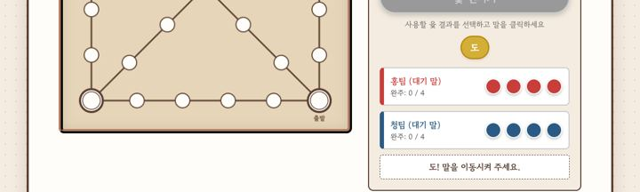
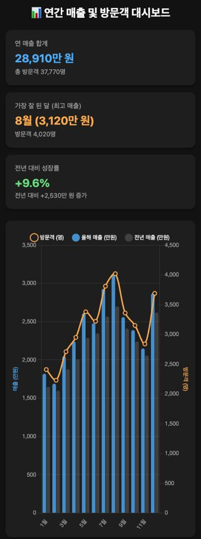

영상 자료
영상 자료001 · 2026. 10. 27. · 구글 제미나이 4 아르곤
아르곤이 짠 코드 모음집
구글 제미나이 4 아르곤에게 일곱 가지를 시켰습니다. 한 번 시키고 고치지 않은 첫 결과 그대로입니다. 남산타워 하나만 오류가 나서 한 번 고치라고 했습니다.
- 7가지
- 약 540원 들었음
- 1번 고침
아르곤 쓰는 곳
- 제미나이 앱
- AI Pro(월 20달러)나 Ultra 구독자만 됩니다. 모델에서 아르곤을 고르고 아래 주문문을 붙여 넣으십시오.
- API
- AI 스튜디오에서 키를 받고 결제를 등록해야 합니다. 무료 구간은 없습니다. 100만 토큰당 입력 2달러, 출력 10달러(11월 30일까지), 12월 1일부터 4달러, 20달러입니다.
- 구독이 없다면
- 결과 파일은 아르곤 없이도 브라우저에서 바로 열립니다. 열어 보고 고쳐 보십시오.
카메라를 켜야
보이는 결과
웹캠 + 소리
손으로 연주하는 웹캠 악기
손을 위아래로 움직이면 음 높이가, 쥐었다 펴면 음량이 바뀝니다.
확인오류 없이 카메라 화면까지 뜨는 것은 확인했습니다. 손 인식은 직접 손을 대 보십시오. '결과 열기'에서 카메라를 허락하면 됩니다.
주문문
웹캠으로 손을 인식해서 소리를 내는 악기를 HTML 파일 하나로 만들어 줘. - MediaPipe Hands를 CDN에서 불러와. - 손을 위아래로 움직이면 음 높이, 손을 쥐었다 펴면 음량이 바뀌게 해 줘(Web Audio). - 화면에 웹캠 영상, 손가락 점, 지금 음 이름(도레미)을 크게 보여 줘. - '시작' 버튼을 눌러야 카메라와 소리가 켜지게 해 줘. - 코드만 답해 줘.

게임
윷놀이
2인용입니다. 윷가락이 굴러가고 도·개·걸·윷·모(빽도 포함), 잡기와 업기까지 들어 있습니다.
확인윷 던지기와 결과(도)가 나오는 것까지 확인했습니다.
주문문
윷놀이 게임을 HTML 파일 하나로 만들어 줘. - 2명이 번갈아 하는 게임, 말은 각자 4개. - '윷 던지기' 버튼을 누르면 윷가락 4개가 굴러가는 애니메이션 뒤에 도·개·걸·윷·모(빽도 포함)가 나와. - 윷판(29칸, 지름길 포함)을 그리고, 말을 눌러서 옮겨. 잡기, 업기, 윷·모·잡으면 한 번 더 규칙을 넣어 줘. - 한국 전통 느낌의 색으로 예쁘게. - 코드만 답해 줘.
3D 장면
남산타워 야경 3D
남산서울타워 주위를 카메라가 천천히 돌고, 아래로 도시 불빛과 한강이 반짝입니다.
확인첫 결과는 오류(i is not defined)로 화면이 까맸습니다. 오류 문장을 붙여 한 번 고치라고 하니 됐습니다.
주문문
three.js로 밤의 남산서울타워와 서울 야경을 3D로 만들어 줘. - HTML 파일 하나로, three.js는 CDN에서 불러와. - 남산 위에 타워, 아래로 반짝이는 도시 불빛과 한강, 하늘엔 별. 카메라가 천천히 타워 주위를 돌아. - 마우스로 돌려 볼 수도 있게. - 최대한 멋지게. 코드만 답해 줘.
카메라를 켜야
보이는 결과
코드 변환
옛 포트란 코드를 파이썬으로
GOTO가 섞인 포트란 기온 통계 코드를 요즘 파이썬으로 바꾸고 테스트까지 붙였습니다.
확인바꾼 코드의 출력이 원래 형식과 같고, 아르곤이 준 테스트 3개가 모두 통과했습니다.
주문문
아래 옛날 포트란 코드를 요즘 파이썬으로 바꿔 줘.
- 동작은 똑같이, 읽기 쉽게.
- 바꾼 코드가 같은 결과를 내는지 확인하는 테스트도 같이 줘.
- 원래 코드가 뭘 하는지 세 줄로 먼저 설명해 줘.
```fortran
PROGRAM AVGTMP
C MONTHLY MEAN TEMPERATURE FROM DAILY READINGS
INTEGER I, N, M
REAL T(31), SUM, AVG, TMAX, TMIN
READ(5,*) N
READ(5,*) (T(I), I=1,N)
SUM = 0.0
TMAX = T(1)
TMIN = T(1)
I = 1
10 IF (I .GT. N) GOTO 20
SUM = SUM + T(I)
IF (T(I) .GT. TMAX) TMAX = T(I)
IF (T(I) .LT. TMIN) TMIN = T(I)
I = I + 1
GOTO 10
20 AVG = SUM / N
M = 0
DO 30 I = 1, N
IF (T(I) .GT. AVG) M = M + 1
30 CONTINUE
WRITE(6,100) AVG, TMAX, TMIN, M
100 FORMAT(' MEAN=',F6.2,' MAX=',F6.2,' MIN=',F6.2,' ABOVE=',I3)
STOP
END
```아르곤의 답 보기
### 1. 원래 코드의 동작 설명 (3줄 요약)
1. 측정한 일수($N$)와 그 날짜만큼의 일별 기온 데이터들을 순서대로 입력받습니다.
2. 입력받은 기온들의 **평균, 최고 기온, 최저 기온**을 계산합니다.
3. 평균 기온보다 높았던 날의 수를 세어, 앞서 구한 통계치들과 함께 지정된 형식으로 출력합니다.
---
### 2. 파이썬(Python) 변환 코드
옛날 포트란의 `GOTO` 문과 고정 배열을 파이썬의 내장 함수(`sum`, `max`, `min`)와 리스트 컴프리헨션을 사용해 현대적이고 읽기 쉽게 바꿨습니다. 테스트가 쉽도록 계산 로직과 입출력 부분을 함수로 분리했습니다.
```python
import sys
def analyze_temperatures(temps: list[float]) -> tuple[float, float, float, int]:
"""기온 리스트를 받아 평균, 최고, 최저 기온과 평균 이상인 날의 수를 반환합니다."""
avg_temp = sum(temps) / len(temps)
max_temp = max(temps)
min_temp = min(temps)
above_avg_count = sum(1 for t in temps if t > avg_temp)
return avg_temp, max_temp, min_temp, above_avg_count
def format_output(
avg: float, tmax: float, tmin: float, above_count: int
) -> str:
"""포트란의 FORMAT(' MEAN=',F6.2,' MAX=',F6.2,' MIN=',F6.2,' ABOVE=',I3)과 동일하게 출력합니다."""
return f" MEAN={avg:6.2f} MAX={tmax:6.2f} MIN={tmin:6.2f} ABOVE={above_count:3d}"
def main():
# 포트란의 READ(5,*) 동작 구현 (공백이나 줄바꿈에 상관없이 숫자를 읽어옴)
input_data = sys.stdin.read().split()
if not input_data:
return
n = int(input_data[0])
# N개의 기온 데이터만 슬라이싱하여 실수(float)로 변환
temps = [float(x) for x in input_data[1 : n + 1]]
# 계산 및 결과 출력
avg, tmax, tmin, m = analyze_temperatures(temps)
print(format_output(avg, tmax, tmin, m))
if __name__ == "__main__":
main()
```
---
### 3. 검증을 위한 테스트 코드
변환된 파이썬 코드가 포트란 코드의 계산 로직 및 출력 형식(`FORMAT` 문)과 완벽히 똑같이 동작하는지 확인하는 `unittest` 코드입니다. 위 코드의 아래에 이어서 붙여넣거나 별도 파일로 실행할 수 있습니다.
```python
import unittest
class TestTemperatureAnalysis(unittest.TestCase):
def test_basic_case(self):
# 5일간의 기온 데이터 테스트
temps = [10.0, 20.0, 30.0, 40.0, 50.0]
avg, tmax, tmin, m = analyze_temperatures(temps)
self.assertAlmostEqual(avg, 30.0)
self.assertAlmostEqual(tmax, 50.0)
self.assertAlmostEqual(tmin, 10.0)
self.assertEqual(m, 2) # 40.0, 50.0 두 개가 평균(30.0)보다 큼
# 포트란 출력 포맷(공백 개수 및 소수점 자리수) 일치 여부 확인
output = format_output(avg, tmax, tmin, m)
self.assertEqual(output, " MEAN= 30.00 MAX= 50.00 MIN= 10.00 ABOVE= 2")
def test_negative_and_float(self):
# 영하의 기온과 소수점이 포함된 데이터 테스트
temps = [-5.5, 0.0, 2.3, 10.2]
avg, tmax, tmin, m = analyze_temperatures(temps)
# 합계: 7.0, 평균: 1.75
self.assertAlmostEqual(avg, 1.75)
self.assertAlmostEqual(tmax, 10.2)
self.assertAlmostEqual(tmin, -5.5)
self.assertEqual(m, 2) # 2.3, 10.2 두 개가 1.75보다 큼
output = format_output(avg, tmax, tmin, m)
self.assertEqual(output, " MEAN= 1.75 MAX= 10.20 MIN= -5.50 ABOVE= 2")
def test_all_same_temperatures(self):
# 모든 기온이 같을 때 (평균을 초과하는 날이 0일이어야 함)
temps = [25.5, 25.5, 25.5]
avg, tmax, tmin, m = analyze_temperatures(temps)
self.assertEqual(m, 0)
output = format_output(avg, tmax, tmin, m)
self.assertEqual(output, " MEAN= 25.50 MAX= 25.50 MIN= 25.50 ABOVE= 0")
if __name__ == "__main__":
# 테스트 실행
unittest.main()
```
#### 변경 포인트 요약
* **반복문 제거:** 포트란의 `10 IF ... GOTO 20` 루프와 `DO 30` 루프를 파이썬 내장 함수(`sum`, `max`, `min`)로 대체하여 가독성을 높였습니다.
* **출력 형식 완벽 재현:** 포트란의 `F6.2`(전체 6자리, 소수점 2자리)와 `I3`(3자리 정수) 포맷을 파이썬의 `f-string` 포맷팅(`{값:6.2f}`, `{값:3d}`)으로 똑같이 구현해 공백 하나까지 동일하게 출력됩니다.카메라를 켜야
보이는 결과
보안 점검
내 코드 보안 구멍 점검
일부러 구멍을 심어 둔 파이썬 웹 서버 코드를 주고 전부 찾아 고치라고 했습니다.
확인심어 둔 구멍 6개(명령어 삽입, 디버그 모드 노출, SQL 인젝션, 경로 조작, 하드코딩된 비밀키, XSS)를 모두 찾았습니다.
주문문
아래 코드에서 보안 구멍을 전부 찾아 줘.
- 위험한 순서로, 구멍마다 ① 어디가 ② 왜 위험한지(공격 예시 한 줄) ③ 어떻게 고치는지.
- 마지막에 다 고친 전체 코드를 줘.
```python
from flask import Flask, request, send_file
import sqlite3, os
app = Flask(__name__)
SECRET_KEY = "admin1234"
@app.route("/login")
def login():
user = request.args.get("user")
pw = request.args.get("pw")
db = sqlite3.connect("app.db")
row = db.execute(f"SELECT * FROM users WHERE name='{user}' AND pw='{pw}'").fetchone()
return "welcome " + user if row else "fail"
@app.route("/file")
def file():
name = request.args.get("name")
return send_file(os.path.join("uploads", name))
@app.route("/admin")
def admin():
if request.args.get("key") == SECRET_KEY:
os.system("backup.sh " + request.args.get("target", ""))
return "ok"
return "no"
if __name__ == "__main__":
app.run(debug=True, host="0.0.0.0")
```아르곤의 답 보기
제시된 코드는 웹 애플리케이션 보안에서 다루는 대표적인 취약점들을 다수 포함하고 있습니다. 위험도가 높은 순서대로 보안 취약점을 분석하고 해결 방법을 제시합니다.
---
### 1. 운영체제 명령어 삽입 (OS Command Injection) - [치명적]
* **① 위치:** `os.system("backup.sh " + request.args.get("target", ""))` (`/admin` 경로)
* **② 위험한 이유:** 사용자 입력값을 검증 없이 셸 명령어에 직접 연결하여 실행하고 있습니다.
* *공격 시나리오:* 공격자가 `target` 파라미터에 세미콜론(`;`)이나 파이프(`|`) 등 셸 메타문자를 포함해 추가 명령어를 전달하면, 서버 권한으로 임의의 시스템 명령어가 실행되어 서버가 완전히 장악될 수 있습니다.
* **③ 해결 방법:** `os.system` 대신 `subprocess.run`을 사용하며, 명령어와 인자를 리스트 형태로 분리하여 전달(`shell=False` 기본값 유지)함으로써 셸 해석을 방지해야 합니다. 또한 허용된 입력값인지 화이트리스트 검증을 수행해야 합니다.
### 2. 디버그 모드 외부 노출 (Debug Mode Enabled) - [치명적]
* **① 위치:** `app.run(debug=True, host="0.0.0.0")`
* **② 위험한 이유:** 모든 네트워크 인터페이스(`0.0.0.0`)에서 접근 가능한 상태로 Flask의 디버그 모드가 활성화되어 있습니다.
* *공격 시나리오:* 의도적으로 에러를 유발하면 상세한 시스템 정보(스택 트레이스)가 노출되며, Werkzeug 디버거 콘솔이 활성화된 경우 브라우저에서 임의의 파이썬 코드를 실행할 수 있습니다.
* **③ 해결 방법:** 운영 환경에서는 반드시 `debug=False`로 설정하고, Gunicorn이나 uWSGI 같은 프로덕션용 WSGI 서버를 사용해야 합니다.
### 3. SQL 인젝션 (SQL Injection) - [높음]
* **① 위치:** `db.execute(f"SELECT * FROM users WHERE name='{user}' AND pw='{pw}'")` (`/login` 경로)
* **② 위험한 이유:** f-string을 사용해 사용자 입력을 SQL 쿼리문에 직접 문자열로 결합하고 있습니다.
* *공격 시나리오:* 입력값에 작은따옴표(`'`)와 논리 연산자(예: 항상 참이 되는 조건)를 포함하여 쿼리 구조를 변경하면, 비밀번호를 몰라도 관리자 계정으로 로그인하거나 데이터베이스의 내용을 탈취할 수 있습니다.
* **③ 해결 방법:** 쿼리 구조와 데이터를 분리하는 파라미터 바인딩(Parameterized Query, `?` 플레이스홀더 사용)을 적용해야 합니다.
### 4. 경로 조작 및 임의 파일 다운로드 (Path Traversal) - [높음]
* **① 위치:** `send_file(os.path.join("uploads", name))` (`/file` 경로)
* **② 위험한 이유:** 사용자가 입력한 파일 이름을 검증 없이 경로 결합에 사용하고 있습니다.
* *공격 시나리오:* `name` 파라미터에 상위 디렉터리 이동 문자(`../`)나 절대 경로를 입력하면, `uploads` 폴더를 벗어나 서버 내의 중요 설정 파일이나 소스 코드를 무단으로 다운로드할 수 있습니다.
* **③ 해결 방법:** Flask에서 제공하는 `send_from_directory("uploads", name)` 함수를 사용하면 내부적으로 경로 조작을 안전하게 방어해 줍니다.
### 5. 하드코딩된 비밀키 및 취약한 인증 방식 - [높음]
* **① 위치:** `SECRET_KEY = "admin1234"`, `request.args.get("pw")` 등
* **② 위험한 이유:**
1. 소스 코드에 추측하기 쉬운 비밀키가 하드코딩되어 있습니다.
2. 비밀번호가 해시(Hash) 처리되지 않고 평문으로 데이터베이스에 저장 및 비교되고 있습니다.
3. 비밀번호와 관리자 키가 URL 쿼리 스트링(`GET` 방식)으로 전달되어 브라우저 히스토리, 서버 로그, 네트워크 장비에 그대로 노출됩니다.
* *공격 시나리오:* 유출된 소스 코드나 서버 접속 로그를 열람하는 것만으로도 관리자 권한과 사용자의 평문 비밀번호를 즉시 획득할 수 있습니다.
* **③ 해결 방법:** 비밀키는 환경 변수(`os.environ`)로 분리하고, 인증 정보는 `POST` 요청의 본문(Body)이나 헤더로 전달받으며, 비밀번호는 `werkzeug.security`의 해시 함수를 사용해 검증해야 합니다. 또한 비밀키 비교 시 타이밍 공격 방지를 위해 `secrets.compare_digest`를 사용하는 것이 안전합니다.
### 6. 반사형 크로스 사이트 스크립팅 (Reflected XSS) - [중간]
* **① 위치:** `return "welcome " + user` (`/login` 경로)
* **② 위험한 이유:** 사용자가 입력한 `user` 값을 이스케이프(Escape) 처리 없이 HTML 응답에 그대로 포함하여 반환합니다.
* *공격 시나리오:* 사용자 이름 파라미터에 악성 자바스크립트 태그를 포함시킨 조작된 링크를 피해자에게 클릭하게 하면, 피해자의 브라우저에서 스크립트가 실행되어 세션 쿠키 등이 탈취될 수 있습니다. (단, 위 코드에서는 로그인 성공 시에만 발생하지만, 에러 메시지 등에 동일 패턴 적용 시 매우 위험합니다.)
* **③ 해결 방법:** `markupsafe.escape` 함수를 사용하여 사용자 입력값의 특수 문자를 HTML 엔티티로 변환하여 출력해야 합니다.
---
### 보안 패치가 완료된 전체 코드
위의 모든 취약점을 수정하고 안전한 코딩 표준을 적용한 코드는 다음과 같습니다.
```python
import os
import secrets
import sqlite3
import subprocess
from flask import Flask, abort, request, send_from_directory
from markupsafe import escape
from werkzeug.security import check_password_hash
app = Flask(__name__)
# [수정 5] 비밀키는 소스 코드에 하드코딩하지 않고 환경 변수에서 로드
SECRET_KEY = os.environ.get("ADMIN_SECRET_KEY")
UPLOAD_FOLDER = os.path.abspath("uploads")
# [수정 5] 인증 정보는 URL 노출을 막기 위해 POST 방식으로만 처리
@app.route("/login", methods=["POST"])
def login():
user = request.form.get("user", "")
pw = request.form.get("pw", "")
# 컨텍스트 매니저(with)를 사용하여 DB 연결 누수 방지
with sqlite3.connect("app.db") as db:
# [수정 3] SQL 인젝션 방지를 위해 파라미터 바인딩(?) 사용
row = db.execute(
"SELECT pw_hash FROM users WHERE name = ?", (user,)
).fetchone()
# [수정 5] 평문 비교 대신 안전한 비밀번호 해시 검증 사용
if row and check_password_hash(row[0], pw):
# [수정 6] XSS 방지를 위해 사용자 입력값을 이스케이프 처리하여 반환
return f"welcome {escape(user)}"
return "fail", 401
@app.route("/file", methods=["GET"])
def file():
name = request.args.get("name", "")
if not name:
abort(400)
# [수정 4] Path Traversal 방지를 위해 send_from_directory 사용
return send_from_directory(UPLOAD_FOLDER, name)
@app.route("/admin", methods=["POST"])
def admin():
# 환경 변수가 설정되지 않은 경우 접근 차단
if not SECRET_KEY:
abort(500)
# [수정 5] 키를 헤더나 POST 본문으로 받고, 타이밍 공격 방지를 위해 compare_digest 사용
provided_key = request.headers.get("X-Admin-Key", "")
if secrets.compare_digest(provided_key, SECRET_KEY):
target = request.form.get("target", "")
# [수정 1] 입력값 화이트리스트 검증 (영숫자와 하이픈, 언더스코어만 허용)
if not target.replace("-", "").replace("_", "").isalnum():
return "invalid target", 400
# [수정 1] Command Injection 방지를 위해 subprocess.run에 리스트 형태로 인자 전달 (shell=False)
try:
subprocess.run(["./backup.sh", target], check=True, timeout=30)
return "ok"
except subprocess.SubprocessError:
return "error", 500
return "no", 403
if __name__ == "__main__":
# [수정 2] 디버그 모드 비활성화 및 로컬호스트 바인딩 (운영 환경에서는 WSGI 서버 사용 권장)
app.run(debug=False, host="127.0.0.1", port=5000)
```
데이터
표를 붙여 넣으면 대시보드
월별 매출 표 하나로 핵심 숫자 카드와 차트가 있는 한 장짜리 대시보드를 만듭니다.
확인연 매출 합계 2억 8,910만 원, 전년 대비 +9.6%가 직접 계산한 값과 같습니다.
주문문
아래 표로 한눈에 보는 대시보드를 HTML 파일 하나로 만들어 줘. - 차트는 Chart.js를 CDN에서 불러와. - 맨 위에 핵심 숫자 카드 3개(연 매출 합계, 가장 잘 된 달, 전년 대비), 아래에 월별 매출 막대와 방문객 선 그래프. - 휴대폰 화면에서도 보기 좋게, 어두운 배경으로. - 코드만 답해 줘. 월,매출(만원),방문객,전년매출(만원) 1,1820,2410,1650 2,1690,2230,1600 3,2050,2710,1880 4,2240,2950,2010 5,2610,3380,2290 6,2480,3220,2350 7,2930,3810,2570 8,3120,4020,2700 9,2560,3360,2410 10,2390,3150,2240 11,2150,2840,2060 12,2870,3690,2620
카메라를 켜야
보이는 결과
API
API로 아르곤 부르는 최소 코드
파이썬 열 몇 줄입니다. 답과 함께 이번에 쓴 토큰과 돈을 계산해 보여 줍니다.
확인우리 계정으로 실제로 돌려 봤습니다.
argon_hello.py · 파일 받기
# 아르곤을 API로 부르는 가장 짧은 코드
# 준비: pip install google-genai
# AI 스튜디오(aistudio.google.com)에서 API 키 발급 + 결제 등록 (아르곤은 무료 구간 없음)
import os
from google import genai
client = genai.Client(api_key=os.environ["GEMINI_API_KEY"]) # 키는 코드에 직접 쓰지 말고 환경 변수로
res = client.models.generate_content(
model="gemini-4-argon",
contents="파이썬으로 로또 번호 6개를 겹치지 않게 뽑는 코드를 짧게 짜 줘",
)
print(res.text)
# 쓴 만큼 계산 (11/30까지 도입가: 입력 100만 토큰당 2달러, 출력 10달러 / 12/1부터 4달러, 20달러)
u = res.usage_metadata
out = (u.candidates_token_count or 0) + (u.thoughts_token_count or 0)
usd = u.prompt_token_count / 1e6 * 2 + out / 1e6 * 10
print(f"입력 {u.prompt_token_count} 토큰, 출력 {out} 토큰, 약 {usd:.4f}달러 (약 {usd * 1400:.0f}원)")